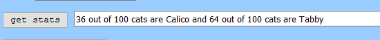

1.First you need to fill in your data.

2.Next just click the "Get Stats" button!
Simplify Stats will set your data out of 100!
3.Click the "Display Graphics" button to see your data displayed

4.Your data will be displayed in the form of colored circles!
Your elements will be represented by red circles and white circles, respectively.

Now go simplify those stats!